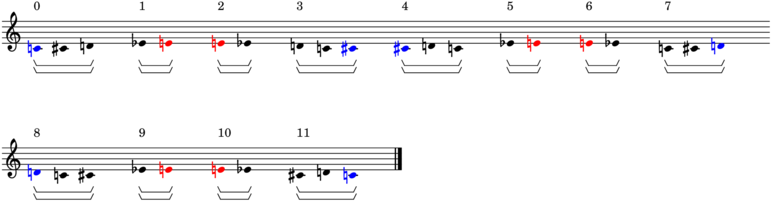
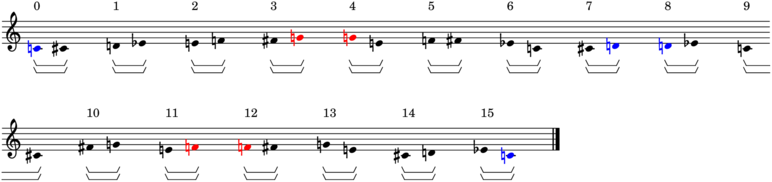

ZaggedPitchClassMaker¶
-
class
baca.tools.ZaggedPitchClassMaker.ZaggedPitchClassMaker(pc_cells=None, division_ratios=None, grouping_counts=None)¶ Zagged-pitch-class-maker.
>>> maker = baca.ZaggedPitchClassMaker( ... pc_cells=[ ... [7, 1, 3, 4, 5, 11], ... [3, 5, 6, 7], ... [9, 10, 0, 8], ... ], ... division_ratios=[ ... [[1], [1], [1], [1, 1]], ... [[1], [1], [1], [1, 1, 1], [1, 1, 1]], ... ], ... grouping_counts=[1, 1, 1, 2, 3], ... ) >>> pitch_class_tree = maker() >>> abjad.show(pitch_class_tree, strict=89)
>>> for tree in pitch_class_tree: ... tree.get_payload(nested=True) ... [[NumberedPitchClass(7), NumberedPitchClass(1), NumberedPitchClass(3), NumberedPitchClass(4), NumberedPitchClass(5), NumberedPitchClass(11)]] [[NumberedPitchClass(3), NumberedPitchClass(5), NumberedPitchClass(6), NumberedPitchClass(7)]] [[NumberedPitchClass(9), NumberedPitchClass(10), NumberedPitchClass(0), NumberedPitchClass(8)]] [[NumberedPitchClass(7), NumberedPitchClass(3)], [NumberedPitchClass(5), NumberedPitchClass(6)]] [[NumberedPitchClass(8), NumberedPitchClass(9), NumberedPitchClass(10), NumberedPitchClass(0)], [NumberedPitchClass(11), NumberedPitchClass(7), NumberedPitchClass(1), NumberedPitchClass(3), NumberedPitchClass(4), NumberedPitchClass(5)], [NumberedPitchClass(0), NumberedPitchClass(8), NumberedPitchClass(9), NumberedPitchClass(10)]] [[NumberedPitchClass(5), NumberedPitchClass(11)]] [[NumberedPitchClass(7), NumberedPitchClass(1)]] [[NumberedPitchClass(3), NumberedPitchClass(4)]] [[NumberedPitchClass(6)], [NumberedPitchClass(7), NumberedPitchClass(3)]] [[NumberedPitchClass(5)], [NumberedPitchClass(4), NumberedPitchClass(5)], [NumberedPitchClass(11), NumberedPitchClass(7)]] [[NumberedPitchClass(1), NumberedPitchClass(3)]] [[NumberedPitchClass(5), NumberedPitchClass(6), NumberedPitchClass(7), NumberedPitchClass(3)]] [[NumberedPitchClass(10), NumberedPitchClass(0), NumberedPitchClass(8), NumberedPitchClass(9)]] [[NumberedPitchClass(3), NumberedPitchClass(5), NumberedPitchClass(6), NumberedPitchClass(7)], [NumberedPitchClass(9)]] [[NumberedPitchClass(10), NumberedPitchClass(0)], [NumberedPitchClass(8)], [NumberedPitchClass(3), NumberedPitchClass(4), NumberedPitchClass(5)]] [[NumberedPitchClass(11), NumberedPitchClass(7), NumberedPitchClass(1)]] [[NumberedPitchClass(8), NumberedPitchClass(9), NumberedPitchClass(10), NumberedPitchClass(0)]] [[NumberedPitchClass(1), NumberedPitchClass(3), NumberedPitchClass(4), NumberedPitchClass(5), NumberedPitchClass(11), NumberedPitchClass(7)]] [[NumberedPitchClass(7), NumberedPitchClass(3), NumberedPitchClass(5), NumberedPitchClass(6)], [NumberedPitchClass(7), NumberedPitchClass(1), NumberedPitchClass(3), NumberedPitchClass(4), NumberedPitchClass(5), NumberedPitchClass(11)]] [[NumberedPitchClass(6), NumberedPitchClass(7)], [NumberedPitchClass(3), NumberedPitchClass(5)], [NumberedPitchClass(0), NumberedPitchClass(8), NumberedPitchClass(9), NumberedPitchClass(10)]] [[NumberedPitchClass(5), NumberedPitchClass(6), NumberedPitchClass(7), NumberedPitchClass(3)]] [[NumberedPitchClass(10)]] [[NumberedPitchClass(0), NumberedPitchClass(8)]] [[NumberedPitchClass(9)], [NumberedPitchClass(11), NumberedPitchClass(7)]] [[NumberedPitchClass(1), NumberedPitchClass(3)], [NumberedPitchClass(4), NumberedPitchClass(5)], [NumberedPitchClass(9), NumberedPitchClass(10), NumberedPitchClass(0), NumberedPitchClass(8)]] [[NumberedPitchClass(5), NumberedPitchClass(11), NumberedPitchClass(7), NumberedPitchClass(1), NumberedPitchClass(3), NumberedPitchClass(4)]] [[NumberedPitchClass(3), NumberedPitchClass(5), NumberedPitchClass(6), NumberedPitchClass(7)]] [[NumberedPitchClass(4), NumberedPitchClass(5), NumberedPitchClass(11), NumberedPitchClass(7), NumberedPitchClass(1), NumberedPitchClass(3)]] [[NumberedPitchClass(7)], [NumberedPitchClass(3), NumberedPitchClass(5)]] [[NumberedPitchClass(6)], [NumberedPitchClass(8)], [NumberedPitchClass(9), NumberedPitchClass(10)]] [[NumberedPitchClass(0)]] [[NumberedPitchClass(6), NumberedPitchClass(7), NumberedPitchClass(3), NumberedPitchClass(5)]] [[NumberedPitchClass(0), NumberedPitchClass(8), NumberedPitchClass(9), NumberedPitchClass(10)]] [[NumberedPitchClass(3), NumberedPitchClass(4), NumberedPitchClass(5), NumberedPitchClass(11), NumberedPitchClass(7), NumberedPitchClass(1)], [NumberedPitchClass(10), NumberedPitchClass(0), NumberedPitchClass(8), NumberedPitchClass(9)]] [[NumberedPitchClass(1), NumberedPitchClass(3), NumberedPitchClass(4)], [NumberedPitchClass(5), NumberedPitchClass(11), NumberedPitchClass(7)], [NumberedPitchClass(5), NumberedPitchClass(6), NumberedPitchClass(7), NumberedPitchClass(3)]]
Special methods
-
__call__()¶ Calls zagged pitch-class maker.
Returns pitch-class tree.
-
__eq__(argument)¶ Is true when argument is a zagged pitch-class with type and public properties equal to those of this zagged pitch-class maker. Otherwise false.
Returns boolean.
-
(AbjadObject).__format__(format_specification='')¶ Formats Abjad object.
Set format_specification to ‘’ or ‘storage’. Interprets ‘’ equal to ‘storage’.
Returns string.
-
__hash__()¶ Hashes zagged pitch-class maker.
-
(AbjadObject).__repr__()¶ Gets interpreter representation of Abjad object.
Returns string.
Read-only properties
-
division_ratios¶ Gets division cells of maker.
Same as helianthation when division ratios and grouping counts are both none:
>>> maker = baca.ZaggedPitchClassMaker( ... pc_cells=[[0, 1, 2], [3, 4]], ... division_ratios=None, ... grouping_counts=None, ... ) >>> pitch_class_tree = maker() >>> abjad.show(pitch_class_tree, strict=89)
>>> for tree in pitch_class_tree: ... tree.get_payload(nested=True) ... [[NumberedPitchClass(0), NumberedPitchClass(1), NumberedPitchClass(2)]] [[NumberedPitchClass(3), NumberedPitchClass(4)]] [[NumberedPitchClass(4), NumberedPitchClass(3)]] [[NumberedPitchClass(2), NumberedPitchClass(0), NumberedPitchClass(1)]] [[NumberedPitchClass(1), NumberedPitchClass(2), NumberedPitchClass(0)]] [[NumberedPitchClass(3), NumberedPitchClass(4)]] [[NumberedPitchClass(4), NumberedPitchClass(3)]] [[NumberedPitchClass(0), NumberedPitchClass(1), NumberedPitchClass(2)]] [[NumberedPitchClass(2), NumberedPitchClass(0), NumberedPitchClass(1)]] [[NumberedPitchClass(3), NumberedPitchClass(4)]] [[NumberedPitchClass(4), NumberedPitchClass(3)]] [[NumberedPitchClass(1), NumberedPitchClass(2), NumberedPitchClass(0)]]
Divides every cell in half:
>>> maker = baca.ZaggedPitchClassMaker( ... pc_cells=[[0, 1, 2, 3], [4, 5, 6, 7]], ... division_ratios=[[(1, 1)]], ... grouping_counts=None, ... ) >>> pitch_class_tree = maker() >>> abjad.show(pitch_class_tree, strict=89)
>>> for tree in pitch_class_tree: ... tree.get_payload(nested=True) ... [[NumberedPitchClass(0), NumberedPitchClass(1)]] [[NumberedPitchClass(2), NumberedPitchClass(3)]] [[NumberedPitchClass(4), NumberedPitchClass(5)]] [[NumberedPitchClass(6), NumberedPitchClass(7)]] [[NumberedPitchClass(7), NumberedPitchClass(4)]] [[NumberedPitchClass(5), NumberedPitchClass(6)]] [[NumberedPitchClass(3), NumberedPitchClass(0)]] [[NumberedPitchClass(1), NumberedPitchClass(2)]] [[NumberedPitchClass(2), NumberedPitchClass(3)]] [[NumberedPitchClass(0), NumberedPitchClass(1)]] [[NumberedPitchClass(6), NumberedPitchClass(7)]] [[NumberedPitchClass(4), NumberedPitchClass(5)]] [[NumberedPitchClass(5), NumberedPitchClass(6)]] [[NumberedPitchClass(7), NumberedPitchClass(4)]] [[NumberedPitchClass(1), NumberedPitchClass(2)]] [[NumberedPitchClass(3), NumberedPitchClass(0)]]
Returns list of lists.
-
grouping_counts¶ Gets grouping counts of maker.
Groups helianthated cells:
>>> maker = baca.ZaggedPitchClassMaker( ... pc_cells=[[0, 1, 2], [3, 4]], ... division_ratios=None, ... grouping_counts=[1, 2], ... ) >>> pitch_class_tree = maker() >>> abjad.show(pitch_class_tree, strict=89)
>>> for tree in pitch_class_tree: ... tree.get_payload(nested=True) ... [[NumberedPitchClass(0), NumberedPitchClass(1), NumberedPitchClass(2)]] [[NumberedPitchClass(3), NumberedPitchClass(4)], [NumberedPitchClass(4), NumberedPitchClass(3)]] [[NumberedPitchClass(2), NumberedPitchClass(0), NumberedPitchClass(1)]] [[NumberedPitchClass(1), NumberedPitchClass(2), NumberedPitchClass(0)], [NumberedPitchClass(3), NumberedPitchClass(4)]] [[NumberedPitchClass(4), NumberedPitchClass(3)]] [[NumberedPitchClass(0), NumberedPitchClass(1), NumberedPitchClass(2)], [NumberedPitchClass(2), NumberedPitchClass(0), NumberedPitchClass(1)]] [[NumberedPitchClass(3), NumberedPitchClass(4)]] [[NumberedPitchClass(4), NumberedPitchClass(3)], [NumberedPitchClass(1), NumberedPitchClass(2), NumberedPitchClass(0)]]
Returns nonempty list of positive integers.
-
pc_cells¶ Gets pitch-class cells of maker.
Returns list of number lists.
-